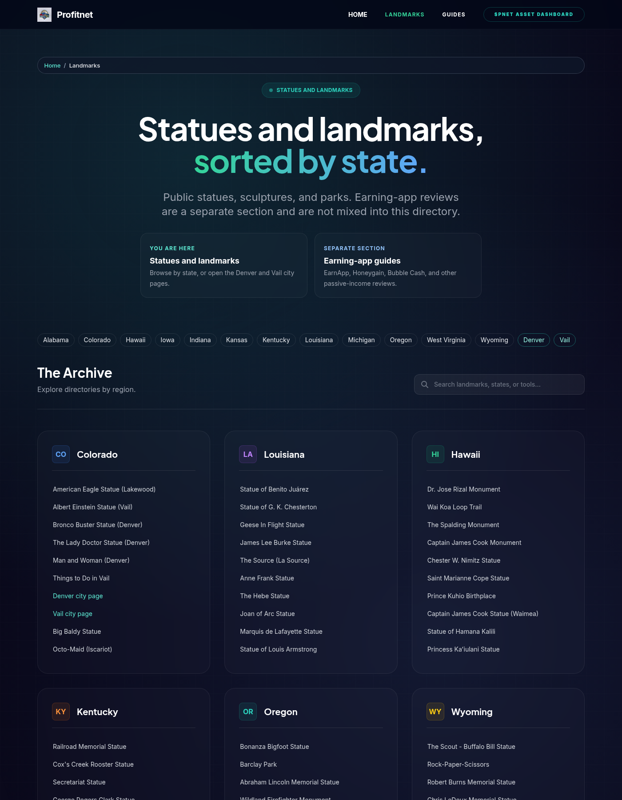
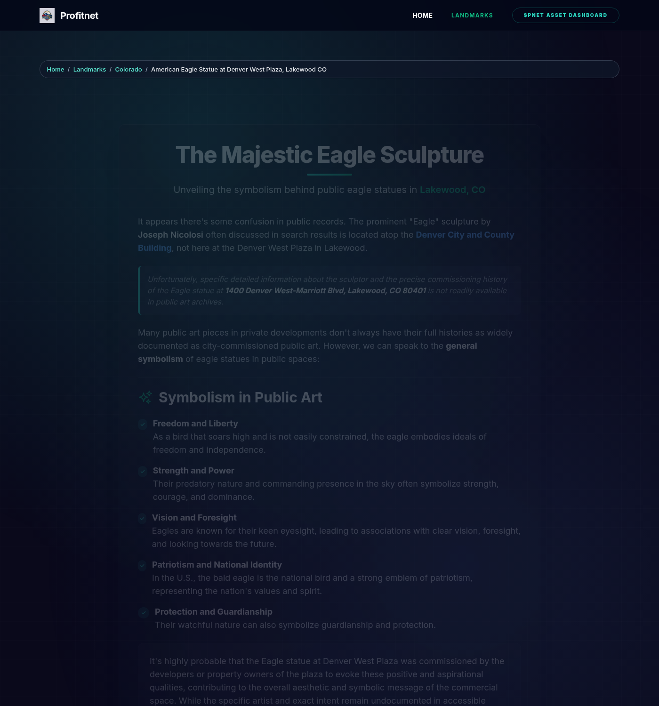
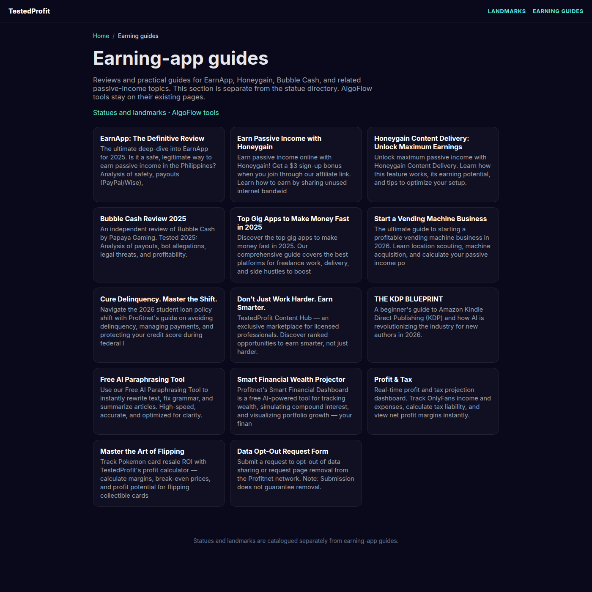

Preview before merge
Open these pages from a local server at the repository root, or from GitHub's file view. GitHub Pages deploys only main, so this branch has no live preview URL on testedprofit.com.
Homepage unchanged.
The AlgoFlow landing page at / was not edited. SHA-256 of index.html:
f9d7e9bb7650226bb2c5c91cb760dffeb04cebbe5400520ffa45aca69d7c9603
Screenshots from this branch
Captured locally. GitHub Pages does not publish this branch.



New structure
Landmarks hubStates, Denver, Vail, and a separate link to earning guides.
Alabama categoryNew state page. Existing statue URLs are linked, not moved.
Colorado categoryExisting Colorado directory, now with breadcrumbs.
Denver city pageEagle, Bronco Buster, Lady Doctor, and nearby statues.
Vail city pageEinstein statue and the Vail guides.
Earning-app guidesEarnApp, Honeygain, Bubble Cash, and the other reviews.
Sample landmarkNew title, description, breadcrumb, and related links.
Titles and descriptions on high-impression pages
| Page | Title | Meta description |
|---|---|---|
| pages/eagle-statue | The Majestic Eagle Sculpture | American eagle statue at Denver West Plaza in Lakewood, Colorado: where it stands, how it differs from the Nicolosi eagle on Denver's City and County Building, and what the sculpture symbolizes. |
| pages/albert-einstein-statue-vail-co | Albert Einstein Memorial Statue | Visit the Albert Einstein statue in Vail Village, Colorado. Gary Lee Price's bronze bench lets you sit with Einstein — location, artist, and what to know before you go. |
| pages/bronco-buster-statue | The Bronco Buster | The Bronco Buster statue in Denver's Civic Center Park is Alexander Phimister Proctor's Western bronze — not the Denver Broncos horse at the stadium. Artist, history, and how to visit. |
| pages/the-lady-doctor-statue | Dr. Justina L. Ford | The Lady Doctor statue honors Dr. Justina Ford, Colorado's first licensed Black woman physician. Find the Denver sculpture, her Five Points house, and her story. |
Sample breadcrumb
On the eagle statue page the visible trail is Home / Landmarks / Colorado / American Eagle Statue at Denver West Plaza, Lakewood CO. Related links point at the Einstein statue, the Bronco Buster, and the Lady Doctor statue.
Landmark pages with the new breadcrumb: 215 existing pages, plus the new state and city pages.
Redirects added in this branch
- /pages/earnapp-definitive-review-philippines/ → /pages/earnapp/
- /pages/cedar-mountain-craig-co-local-guide/ → /CO/Landmarks/Cedar-Mountain/
- /pages/rotary-park/ → /rotary-park/
- /pages/woodbury-park/ → /pages/Woodbury Park/
- /tokenomics/ → /pages/tokenomics/
- /CO/Landmarks/Bear-Statue/ → /pages/bear-statue/ (exact duplicate)
- /blogs/news/ → /pages/guides/